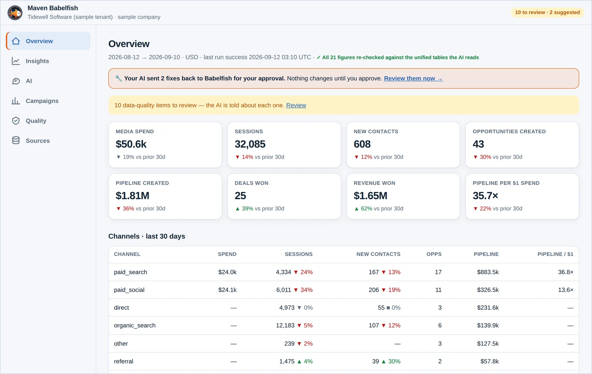
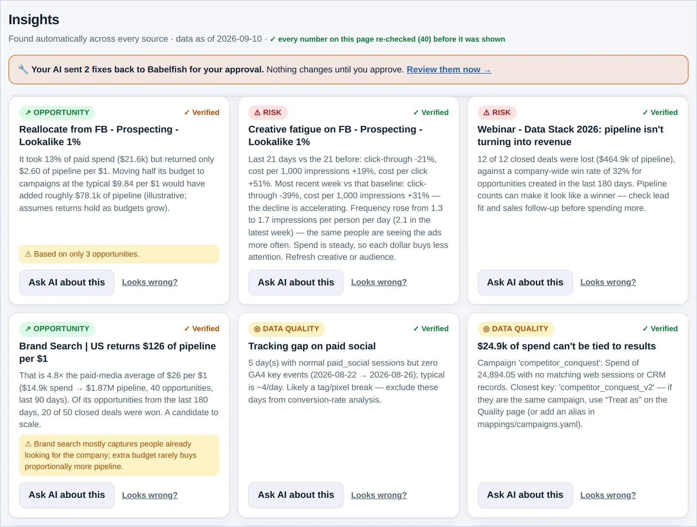
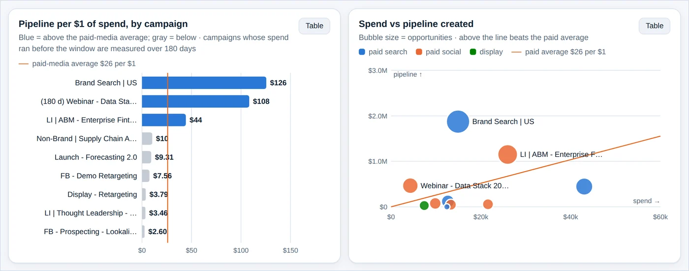
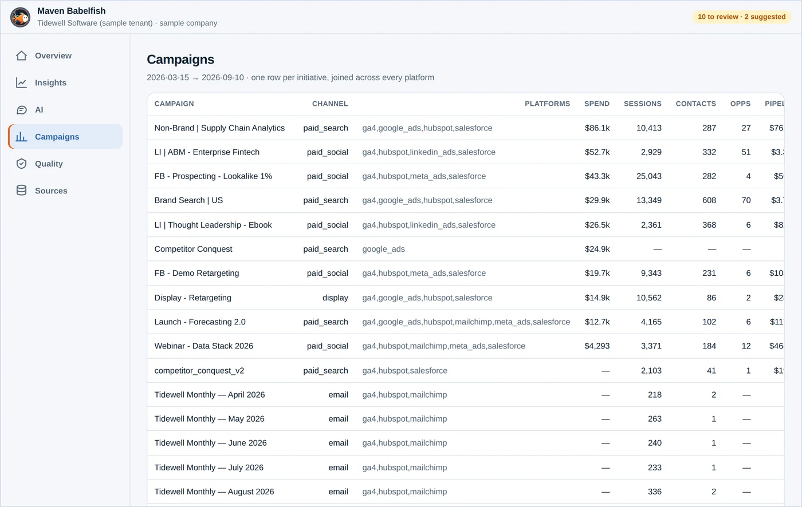

Maven BabelFish
Every marketing platform · one language · any AI
In developmentAd platforms, CRMs, web analytics, email and vendor spreadsheets each name the same campaign differently, count the same person twice and report in their own units — so nobody can say what spend actually produced. BabelFish aggregates every platform into one consistent language, matches campaigns and people across systems, verifies every number, and then makes it all answerable in the AI your team already uses.
From every dialect to one language
HubSpot, Salesforce, Google Ads, Meta, GA4, Mailchimp, any spreadsheet export. You connect them yourself, in minutes.
Names, channels, currencies and dates translated to one vocabulary; campaigns matched and people merged across systems; spend joined to outcomes.
Claude, ChatGPT, Copilot, Gemini, a private model on your own machine — or the free AI that ships with BabelFish.
Aggregation is the product. The AI is the payoff.
Ad spend sits in one system and the deal it produced in another. BabelFish matches them — so you can rank campaigns by pipeline created per dollar, not by clicks.
The same person in two CRMs becomes one record; four spellings of a campaign become one key; every currency and date lands in your reporting units.
Every figure is recounted against your source data, and findings that are technically right but misleading are held back with the reason.
Wasted spend, fading creative, deals that never close, broken tracking, channels gaining and slowing — flagged the moment the data refreshes.
BabelFish never bills you for AI. You keep your own account with Claude, ChatGPT, Copilot or Gemini and pay them directly at their price — no markup, no reselling, no lock-in. Or use the free AI that installs with BabelFish and pay nobody.
Inside the console
Every screen below is the working build, running on a sample company generated to behave like a real marketing team — including its data problems. No customer data is shown.
In development · screens will change before release




You choose. Whichever you pick, you pay that AI company directly — or nothing at all, if you use the one that comes installed.
How it works
iPhone, Android, Mac and Windows, with the built-in AI already set up. Your data and credentials stay on your device, your AI gets read-only access with personal details masked, and every number traces back to its source record.
1 · Connect
Every CRM, ad platform and file.
2 · Unify
One language, verified end to end.
3 · Ask any AI
Yours, private, built-in, or all of them.
4 · Act
Verified answers, findings and fixes.